ISE and F5 AWS Deployment with Terraform and Ansible
In my first post, I'll walk through configuration of Terraform and Ansible to fully automate deployment and configuration of ISE nodes behind an F5 Load Balancer with just one command.
We will use AWS for this configuration. I plan to add a similar document for Azure in the near future
aws.ciscodemo.net domain is used for this example and that can updated to any other domain. ISE requires valid certificates to put together a deployment. This template will use pre-generated wildcard certificates for *.aws.ciscodemo.net.
Full code for the template is available here: https://github.com/vbobrov/terraform/tree/main/aws/ise-f5
This is the recording of the template being applied.
Topology
This diagram shows the topology used for this document. To keep things simple, everything is deployed in a single AWS Availability Zone
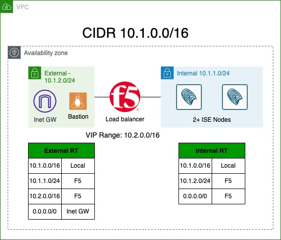
This template will configure a completely isolated environment that's not connected to any VPN. All of the testing and validation will be done from within this environment.
Resources
This topology includes the following resources
- Virtual Private Cloud (VPC)
- External Subnet
- Internal Subnet
- Small Amazon Linux instance that's used to reach this network remotely. This host is connected to the external subnet.
- Internet Gateway to enable the Linux host to access the Internet
- F5 Instance with 3 interfaces:
- Management is connected to External Subnet
- External Interface
- Internal Interface
- Two or more ISE Instances
Routing
As a part of the base template, no external connectivity (ie VPN) is configured. To validate that the configuration is correct, we will execute tests from the Linux host.
All routing tables in AWS VPC automatically contain a CIDR range route that is handled by AWS. You can see the route listed on the diagram above as Local.
As a result, when ISE nodes respond back to our Linux host, that response will be intercepted by AWS and sent directly to the Linux host. This will break connectivity through the F5.
To work around this, we need to add routes matching the Internal and External subnet blocks exactly to be routed via the respective Internal and External interfaces of the F5.
Note that this ability to force traffic between subnets in the same VPC through an "inspection" appliance is a relatively new feature of AWS. For more information, see this link: https://aws.amazon.com/blogs/aws/inspect-subnet-to-subnet-traffic-with-amazon-vpc-more-specific-routing/.
Next, we need to be able to publish a VIP address on the F5 that would be routed towards F5's External Interface. While the feature described above allows us to add routes to specific AWS subnets, we cannot pick and arbitrary IP Block within the VPC CIDR and route it towards the F5. AWS does not allow such routing configuration. Instead, we route an IP address range that does not conflict with the VPC CIDR. In the diagram above, it is 10.2.0.0/16.
Final note on routing is relevant to the F5. When F5 is provisioned in AWS, it is provisioned with the first interface on DHCP for management. Subsequent interfaces are used for data plane, such as External and Internal. By default, data plane and management interfaces are attached to the same global routing table. To avoid, management and data plane traffic from clashing with each other, we can utilize Route Domains.
Route Domain is a numeric value that creates a separate routing table (or context). Once a Route Domain is created, we can associate IP address to that numeric value using % operator. In this document, we will use %10 for data plane. For example, if we want to add a default gateway, we use 0.0.0.0%10/0.
Using Linux Bastion
This template will deploy an Internet accessible Amazon Linux host that is made accessible over SSH from public IP addresses supplied in a variable.
Access to the F5 and ISE nodes is available through the Linux host using SSH port forwarding.
To enable dynamic port forward using CLI client, -D option is used.
$ ssh -D 18888 -i ssh-key.pem -D 18888 ec2-user@mgm-ise.aws.ciscodemo.net
Last login: Wed Feb 1 19:07:42 2023 from ****
__| __|_ )
_| ( / Amazon Linux 2 AMI
___|\___|___|
https://aws.amazon.com/amazon-linux-2/
[ec2-user@ip-10-1-2-50 ~]$ The following screenshot shows dynamic SSH port forwarding configured with SecureCRT.
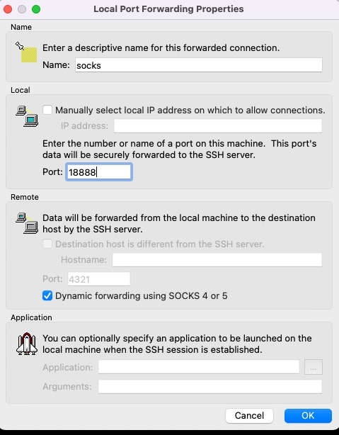
Once forwarding is configured, we can point our browser at localhost:18888 as SOCKS proxy and we're able to access instances in our topology. This is an example configuration from Firefox.
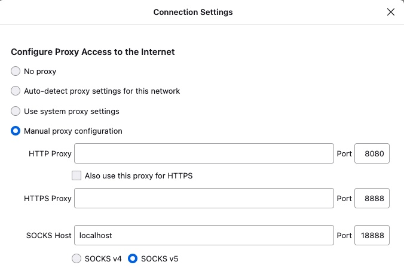
In this screenshot, the browser can reach the ISE node by its name through the SOCKS proxy
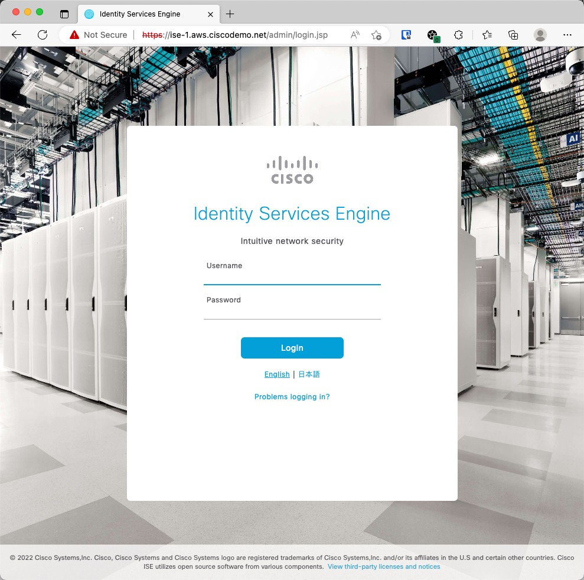
Automating F5 Configuration
Similar to other AWS instances, Custom Data field is used to feed configuration to initialize the F5 using TMSH commands. This link describes the process: https://clouddocs.f5.com/cloud/public/v1/shared/cloudinit.html
I need to mentioned that F5 does support modern onboarding and configuration using declarative YAML-based templates. Namely, Declarative Onboarding (DO) configures system parameters and Application Services 3 (AS3) to configure LTM. I found those methods a bit to complex for what's needed for this template. More information on this can be found here: https://clouddocs.f5.com/
F5 is normally configured through the GUI. There are countless guides on configuring F5 for ISE using the GUI.
F5 does come with a robust CLI interface using TMSH utility that can be used to configure all aspects of load balancer configuration. Full CLI guide is available here: https://clouddocs.f5.com/cli/tmsh-reference/latest/commands/.
At a high level, TMSH has Commands and Modules. The commands that are used for this document are create, modify and delete. These commands reference a module where these actions are executed. For example, to create an LTM resources such as a Virtual Server, we would use create /ltm. To configure network settings such as network interfaces, we would use create /net.
As with any mature CLI interface, there are thousands of commands and parameters available and it could take a lifetime to identify the correct combination of parameters to match what is configured in the GUI.
The easier way is configure the F5 using GUI and then view resulting text config to derive the CLI commands that we need for provisioning. The command is show running-config <section>. For example, show running-config ltm.
Let's look at a few of examples.
This screenshot shows Route Domain 10 configuration
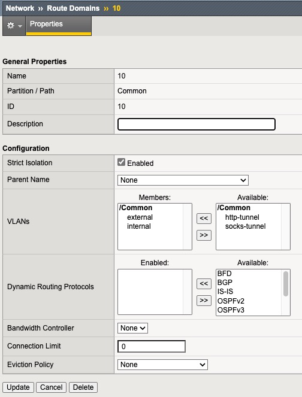
Since this is a setting under Network menu, show running-config net shows the TMSH representation of this config.
Route Domain in CLI looks as follows:
net route-domain 10 {
id 10
vlans {
internal
external
}
}By some trial and error and using "?" we can determine the TMSH command to add this Route Domain
tmsh create /net route-domain 10 vlans add { internal external }This screenshot shows RADIUS Health Monitor
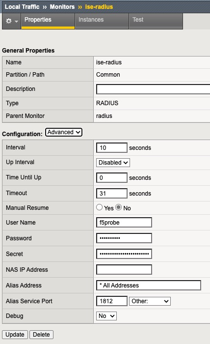
Since this is in LTM section show running-config ltm or show running-config ltm monitor shows us the CLI representation
ltm monitor radius ise-radius {
debug no
defaults-from radius
destination *.radius
interval 10
password $M$4c$p5NTxsuKXlnN5T3CCxRRWg==
secret $M$t1$OMKZfWF9sgRd+V0P9TbJ3A==
time-until-up 0
timeout 31
username f5probe
}A few options in the output above are at default, so they don't need to be specified in the final command. Generally speaking, if a particular option was not changed from the defaults in the GUI, we don't need to specify it in CLI.
The command to create this monitor is. In the output below, taken from f5-cloud-init.tftpl file, there are variables that are substituted by terraform before passing this template to the F5.
tmsh create /ltm monitor radius ise-radius destination *.radius username f5probe password ${admin_password} secret ${admin_password}This is the output of show running-config ltm virtual of ISE Authentication Virtual Server.
ltm virtual ise-auth {
creation-time 2023-02-01:06:23:39
destination 10.2.0.1%10:radius
fallback-persistence source_addr
ip-protocol udp
last-modified-time 2023-02-01:06:23:39
mask 255.255.255.255
persist {
universal {
default yes
}
}
pool ise
profiles {
calling-station-id { }
udp { }
}
serverssl-use-sni disabled
source 0.0.0.0%10/0
translate-address enabled
translate-port enabled
vs-index 2
}The TMSH command to create this Virtual Server is
tmsh create /ltm virtual ise-auth destination ${ise_vip}%10:1812 mask 255.255.255.255 ip-protocol udp pool ise persist replace-all-with { universal } profiles add { udp calling-station-id } fallback-persistence source_addrThe F5 template included in this example performs the following configuration tasks
- Sets the admin password
- Disables GUI Setup Wizard
- Creates Internal and External VLANs
- Creates a separate Route Domain for Internal and External interfaces with ID of 10.
- Assigns SelfIP addresses to Internal and External interfaces
- Sets default gateway
- Creates RADIUS Health Check
- Creates Calling-Station-Id RADIUS Profile
- Creates ISE Pool with RADIUS Monitor
- Creates ISE Nodes and adds them to the Pool
- Creates Virtual Servers for :1812 and :1813, pointing to the Pool and using Calling-Station-Id profile
- Creates Passthrough VIP
- Creates SNAT Pool for CoA
- Creates Virtual Server for UDP/1700 to be NATd to the SNAT Pool
- Saves the config
Automating ISE Configuration
Ansible is used to provision ISE. Full ansible playbook is available is in ise-provision.yml file.
The playbook grabs a number of variables from the inventory file named ansible-inv.yml. This file is dynamically generated from a template by terraform. This is discussed in details in the terraform section below.
Let's walk through the tasks the playbook.
Waiting for ISE ERS API endpoint
In this task, we use the generic URI module to detect if ISE is up and its ERS API starts returning results. The API call is executed up to 1000 times at 5 second intervals. On a t3.xlarge instance type, this takes close to 30 minutes to complete.
register parameter is used to save the result of the API call to version variable and it is checked for successful result.
- name: Check if ISE is up
uri:
url: https://{{ansible_host}}/ers/config/service/versioninfo
timeout: 10
url_username: "{{ise_username}}"
url_password: "{{ise_password}}"
validate_certs: no
headers:
Accept: "application/json"
Content-Type: "application/json"
register: version
until: version.status==200 and "json" in version and "VersionInfo" in version.json
retries: 1000
delay: 5Install Root CA
This task install Root CA Certificate in the trusted store.
- name: Install Root Certificate
cisco.ise.trusted_certificate_import:
ise_hostname: "{{ansible_host}}"
ise_username: "{{ise_username}}"
ise_password: "{{ise_password}}"
ise_verify: "{{ise_verify}}"
allowBasicConstraintCAFalse: true
allowOutOfDateCert: true
allowSHA1Certificates: true
data: "{{ca_cert}}"Install System Certificate
System certificate is installed and marked for Admin and EAP. In this example, wildcard certificate is used for simplicity
- name: Install Wildcard Cert
cisco.ise.system_certificate_import:
ise_hostname: "{{ansible_host}}"
ise_username: "{{ise_username}}"
ise_password: "{{ise_password}}"
ise_verify: "{{ise_verify}}"
admin: true
eap: true
allowExtendedValidity: true
allowOutOfDateCert: true
allowPortalTagTransferForSameSubject: true
allowReplacementOfCertificates: false
allowReplacementOfPortalGroupTag: true
allowRoleTransferForSameSubject: false
allowSHA1Certificates: true
allowWildCardCertificates: true
data: "{{system_cert}}"
privateKeyData: "{{system_key}}"Restart Wait
After Admin Certificate install, ISE nodes automatically restart, but it could take them a few seconds. To be on the safe side, the next task waits for 60 seconds for the restart to initiate
- name: Sleep for 60 seconds for restart to initiate
ansible.builtin.wait_for:
timeout: 60ERS Wait
Next task waits for ERS API endpoint to become accessible again after restart.
- name: Check if ISE is up
uri:
url: https://{{ansible_host}}/ers/config/service/versioninfo
timeout: 10
url_username: "{{ise_username}}"
url_password: "{{ise_password}}"
validate_certs: no
headers:
Accept: "application/json"
Content-Type: "application/json"
register: version
until: version.status==200 and "json" in version and "VersionInfo" in version.json
retries: 300
delay: 5Add F5 Network Devices
In this example, there's only one F5 device. However, the next task uses a loop in case there are multiple F5s are specified in the variable.
This task also includes a condition to execute only on the Primary Admin node. This condition uses a variable supplied in the inventory file which is covered later in this document
- name: Add F5 NADs
cisco.ise.network_device:
ise_hostname: "{{ansible_host}}"
ise_username: "{{ise_username}}"
ise_password: "{{ise_password}}"
ise_verify: "{{ise_verify}}"
name: "{{ item.name }}"
state: present
NetworkDeviceIPList:
- ipaddress: "{{ item.ip }}"
mask: 32
authenticationSettings:
networkProtocol: RADIUS
radiusSharedSecret: "{{ise_password}}"
loop: "{{ f5_list }}"
when: role == "primary"Add F5 Health Check User
This tasks adds the username that is used for F5 to monitor the ISE nodes
- name: Add F5 User
cisco.ise.internal_user:
ise_hostname: "{{ansible_host}}"
ise_username: "{{ise_username}}"
ise_password: "{{ise_password}}"
ise_verify: "{{ise_verify}}"
state: present
name: f5probe
password: "{{ise_password}}"
changePassword: false
when: role == "primary"Change PAN to Primary Mode
- name: Change PAN from Standalone to Primary
cisco.ise.node_standalone_to_primary:
ise_hostname: "{{ansible_host}}"
ise_username: "{{ise_username}}"
ise_password: "{{ise_password}}"
ise_verify: "{{ise_verify}}"
hostname: "{{inventory_hostname_short}}"
when: role == "primary"Join Secondary Nodes
This task will add all the nodes created by this template to the deployment.
Node #2 is configured as Secondary Admin/MnT and subsequent nodes are configured as PSNs. The logic determining the role for each node is defined in terraform that will be covered later in this document.
- name: Register Secondary Nodes
cisco.ise.personas_register_node:
primary_ip: "{{ansible_host}}"
primary_username: "{{ise_username}}"
primary_password: "{{ise_password}}"
fqdn: "{{item.fqdn}}"
username: "{{ise_username}}"
password: "{{ise_password}}"
roles: "{{ item.roles }}"
services: "{{ item.services }}"
loop: "{{ secondary_list }}"
when: role == "primary"Terraform Resources
This section will go over components provisioned by terraform
The template is broken into separate files for each type of resources.
general.tf
This file defines tags that are associated with created resources and generates a random password that's used in a few places
locals {
tags = {
"Example" : basename(path.cwd)
"Project" : "ise"
}
}
resource "random_password" "password" {
length = 10
special = false
}variables.tf
This file defines variables that are used in the resources.
ssh_sources variable needs to be updated to include the source IP blocks where the terraform will run from. Terraform will need to be able to SSH to the Linux bastion host. In other words, this should be public IP address where terraform is run from.
variable "vpc_cidr" {
default = "10.1.0.0/16"
}
variable "ssh_sources" {
default = ["100.100.100.0/24","200.200.200.0/24"]
}
variable "ise_count" {
default = 2
}
variable "f5_vip_cidr" {
default = "10.2.0.0/16"
}
variable "root_ca_file" {
default = ".demo-ca-root.cer"
}
variable "system_ca_file" {
default = ".aws.ciscodemo.net.cer"
}
variable "system_key_file" {
default = ".aws.ciscodemo.net.key"
}vpc.tf
This file defines networking components
VPC
resource "aws_vpc" "ise" {
cidr_block = var.vpc_cidr
enable_dns_support = true
enable_dns_hostnames = true
tags = merge(
local.tags,
{
Name = "ise-vpc"
}
)
}resource "aws_internet_gateway" "inet" {
vpc_id = aws_vpc.ise.id
tags = merge(
local.tags,
{
Name = "ise-internet-gateway"
}
)
}Subnets
cidr_subnet function is used to calculate the network addresses for the two subnets based on the VPC CIDR Block. For example, when VPC CIDR block is 10.1.0.0/16, the two subnets will be 10.1.1.0/24 and 10.1.2.0/24
resource "aws_subnet" "f5_internal" {
vpc_id = aws_vpc.ise.id
cidr_block = cidr_subnet(aws_vpc.ise.cidr_block,8,1)
availability_zone = "us-east-1a"
tags = merge(
local.tags,
{
Name = "f5-internal"
}
)
}
resource "aws_subnet" "f5_external" {
vpc_id = aws_vpc.ise.id
cidr_block = cidr_subnet(aws_vpc.ise.cidr_block,8,2)
availability_zone = "us-east-1a"
tags = merge(
local.tags,
{
Name = "f5-external"
}
)
}Internal Route Table
Internal routes are created as shown on the diagram at the top and the table is associate with the Internal subnet
resource "aws_route_table" "f5_internal" {
vpc_id = aws_vpc.ise.id
tags = merge(
local.tags,
{
Name = "f5-internal"
}
)
}
resource "aws_route" "f5_internal2external" {
route_table_id = aws_route_table.f5_internal.id
destination_cidr_block = aws_subnet.f5_external.cidr_block
network_interface_id = aws_network_interface.f5_internal.id
}
resource "aws_route" "f5_internal_default" {
route_table_id = aws_route_table.f5_internal.id
destination_cidr_block = "0.0.0.0/0"
network_interface_id = aws_network_interface.f5_internal.id
}
resource "aws_route_table_association" "f5_internal" {
subnet_id = aws_subnet.f5_internal.id
route_table_id = aws_route_table.f5_internal.id
}External Route Table
resource "aws_route_table" "f5_external" {
vpc_id = aws_vpc.ise.id
tags = merge(
local.tags,
{
Name = "f5-external"
}
)
}
resource "aws_route" "f5_external_default" {
route_table_id = aws_route_table.f5_external.id
destination_cidr_block = "0.0.0.0/0"
gateway_id = aws_internet_gateway.inet.id
}
resource "aws_route" "f5_external2internal" {
route_table_id = aws_route_table.f5_external.id
destination_cidr_block = aws_subnet.f5_internal.cidr_block
network_interface_id = aws_network_interface.f5_external.id
}
resource "aws_route" "f5_vip_cidr" {
route_table_id = aws_route_table.f5_external.id
destination_cidr_block = var.f5_vip_cidr
network_interface_id = aws_network_interface.f5_external.id
}
resource "aws_route_table_association" "f5_external" {
subnet_id = aws_subnet.f5_external.id
route_table_id = aws_route_table.f5_external.id
}Management Security Group
This security group allows SSH to the Linux bastion host from the specified public IP addresses from ssh_sources variable.
resource "aws_security_group" "management_access" {
name = "ise-managment-access"
vpc_id = aws_vpc.ise.id
tags = merge(
local.tags,
{
Name = "ise-management-access"
}
)
egress = [
{
description = "Allow all outbound"
from_port = 0
to_port = 0
protocol = "-1"
cidr_blocks = ["0.0.0.0/0"]
ipv6_cidr_blocks = []
prefix_list_ids = []
security_groups = []
self = false
}
]
ingress = [
{
description = "Allow SSH"
from_port = 22
to_port = 22
protocol = "TCP"
cidr_blocks = var.ssh_sources
ipv6_cidr_blocks = []
prefix_list_ids = []
security_groups = []
self = false
},
]
}Full Access Security Group
To keep this simple, all access is permitted for all other resources in this template. Since none of the resources are directly exposed to the Internet, there's little risk in this configuration.
resource "aws_security_group" "full_access" {
name = "ise-full-access"
vpc_id = aws_vpc.ise.id
tags = merge(
local.tags,
{
Name = "ise-full-access"
}
)
egress = [
{
description = "Allow all outbound"
from_port = 0
to_port = 0
protocol = "-1"
cidr_blocks = ["0.0.0.0/0"]
ipv6_cidr_blocks = []
prefix_list_ids = []
security_groups = []
self = false
}
]
ingress = [
{
description = "Allow all inbound"
from_port = 0
to_port = 0
protocol = "-1"
cidr_blocks = ["0.0.0.0/0"]
ipv6_cidr_blocks = []
prefix_list_ids = []
security_groups = []
self = false
},
]
}ise.tf
This create ISE node AWS instances x number of times defined in ise_count variable.
Note that we need to explicitly set delete_on_termination flag. By default, that flag is set to false and when terraform destroys the instance, the disk is not deleted causing costs to keep accumulating in AWS.
Both DNS and NTP servers are set to AWS provided ones.
data "aws_ami" "ise_32" {
most_recent = true
owners = ["679593333241"]
filter {
name = "name"
values = ["Cisco Identity Services Engine (ISE) v3.2*"]
}
}
resource "aws_instance" "ise" {
count = var.ise_count
ami = data.aws_ami.ise_32.id
instance_type = "t3.xlarge"
key_name = "aws-ssh-1"
subnet_id = aws_subnet.f5_internal.id
associate_public_ip_address = false
user_data_replace_on_change = true
vpc_security_group_ids = [aws_security_group.full_access.id]
ebs_block_device {
device_name = "/dev/sda1"
delete_on_termination = true
}
user_data = <<-EOT
hostname=ise-${count.index+1}
dnsdomain=aws.ciscodemo.net
primarynameserver=169.254.169.253
ntpserver=169.254.169.123
username=iseadmin
password=${random_password.password.result}
timezone=Etc/UTC
ersapi=yes
openapi=yes
pxGrid=no
pxgrid_cloud=no
EOT
tags = merge(
local.tags,
{
Name = "ise-${count.index + 1}"
}
)
}F5
Interfaces
Three (3) interfaces are provisioned: Management, External and Internal.
resource "aws_network_interface" "f5_management" {
description = "f5-management"
subnet_id = aws_subnet.f5_external.id
security_groups = [aws_security_group.full_access.id]
tags = merge(
local.tags,
{
Name = "f5-management"
}
)
}
resource "aws_network_interface" "f5_internal" {
description = "f5-internal"
subnet_id = aws_subnet.f5_internal.id
security_groups = [aws_security_group.full_access.id]
source_dest_check = false
tags = merge(
local.tags,
{
Name = "f5-internal"
}
)
}
resource "aws_network_interface" "f5_external" {
description = "f5_external"
subnet_id = aws_subnet.f5_external.id
security_groups = [aws_security_group.full_access.id]
source_dest_check = false
tags = merge(
local.tags,
{
Name = "f5-external"
}
)
}Instance
When associating interfaces to the F5 instance, Management interface must have index of 0.
As described in the section above, configuration on the F5 is configured using cloud-init. templatefile function is used to build up the cloud-init config from f5-cloud-init.tftpl template file and feeding information from resources as variables.
data "aws_ami" "f5_16" {
most_recent = true
owners = ["679593333241"]
filter {
name = "name"
values = ["F5 BIGIP-16*"]
}
filter {
name = "product-code"
values = ["8esk90vx7v713sa0muq2skw3j"]
}
}
resource "aws_instance" "f5" {
ami = data.aws_ami.f5_16.id
instance_type = "c5.xlarge"
key_name = "aws-ssh-1"
user_data_replace_on_change = true
user_data = templatefile("f5-cloud-init.tftpl",
{
admin_password = random_password.password.result
internal_ip = aws_network_interface.f5_internal.private_ip
external_ip = aws_network_interface.f5_external.private_ip
external_gw = cidrhost(aws_subnet.f5_external.cidr_block, 1)
ise_nodes = [ for i in range(length(aws_instance.ise)): {"name":"ise-${i+1}","ip":aws_instance.ise[i].private_ip}]
ise_vip = cidrhost(var.f5_vip_cidr,1)
}
)
network_interface {
network_interface_id = aws_network_interface.f5_management.id
device_index = 0
}
network_interface {
network_interface_id = aws_network_interface.f5_external.id
device_index = 1
}
network_interface {
network_interface_id = aws_network_interface.f5_internal.id
device_index = 2
}
tags = merge(
local.tags,
{
Name = "f5-ise"
}
)
}ansible.tf
This file is responsible for generating the ansible inventory file, uploading it to the Linux bastion host and launching ansible-playbook on it.
Inventory
This resource generates ansible inventory file based on ansible-inv.tftpl template file.
The generated file is saved to ansible-inv.yml.
There are a few long formulas that are used to calculate some inventory parameters that are then processed by the ansible playbook.
Namely, they are:
- nodes variable is pupulated with a list of all ISE nodes. The first node is marked as primary and all subsequent nodes as secondary.
- f5 variable contains a list of IP addresses of F5s. In this template, only a single f5 is provisioned. The formula can be updated if multiple F5s are used
- secondary_list includes a list of ISE nodes starting at the second one. For ISE node #2, roles is set to SecondaryAdmin and SecondaryMonitoring. For services, all nodes are enabled for Session and Profiler.
- Certificate variables replace new line characters with literal \n which ansible task expects
resource "local_file" "ansible_inv" {
filename = "ansible-inv.yml"
content = templatefile("ansible-inv.tftpl", {
username="iseadmin"
password=random_password.password.result
nodes=[for i in range(var.ise_count):
{
"fqdn": "ise-${i+1}.aws.ciscodemo.net",
"role": i==0?"primary":"secondary"
}
]
f5_list="'[${join(",",[for f in range(length([aws_network_interface.f5_internal.private_ip])): "{\"name\":\"f5-${f+1}\",\"ip\":\"${[aws_network_interface.f5_internal.private_ip][f]}\"}"])}]'"
secondary_list="'[${join(",",[for s in range(2,var.ise_count+1): "{\"fqdn\":\"ise-${s}.aws.ciscodemo.net\",\"roles\":[${s==2?"\"SecondaryAdmin\",\"SecondaryMonitoring\"":""}],\"services\":[\"Session\",\"Profiler\"]}"])}]'"
ca_cert=replace(replace(file(var.root_ca_file),"\n","\\n"),"\r","")
system_cert=replace(replace(file(var.system_ca_file),"\n","\\n"),"\r","")
system_key=replace(replace(file(var.system_key_file),"\n","\\n"),"\r","")
})
}Null Resource
This type of resource is commonly used when we need to execute a task that is not specifically tied to a singe resource.
This resource is used to upload ansible playbook and ansible inventory to the Linux bastion host and then execute ansible-playbook referencing those files
depends_on parameter is used here to ensure that the inventory file and ISE nodes are provisioned.
resource "null_resource" "ise_provision" {
connection {
type = "ssh"
user = "ec2-user"
host = aws_instance.mgm.public_ip
private_key = file("~/.ssh/aws-ssh-1.pem")
agent = false
}
provisioner "file" {
source = "${path.module}/ansible-inv.yml"
destination = "/home/ec2-user/ansible-inv.yml"
}
provisioner "file" {
source = "${path.module}/ise-provision.yml"
destination = "/home/ec2-user/ise-provision.yml"
}
provisioner "remote-exec" {
inline = ["ansible-playbook -i /home/ec2-user/ansible-inv.yml /home/ec2-user/ise-provision.yml"]
}
depends_on = [
aws_instance.ise,
local_file.ansible_inv
]
}mgm.tf
Cloud-init is used to pre-install software on the Linux bastion host.
At the end of provisioning, sudo cloud-init status --wait command is execute to allow terraform to wait until all cloud-init tasks are finished
data "aws_ami" "ami_linux" {
most_recent = true
owners = ["amazon"]
filter {
name = "name"
values = ["amzn2-ami-hvm*"]
}
filter {
name = "root-device-type"
values = ["ebs"]
}
filter {
name = "architecture"
values = ["x86_64"]
}
}
resource "aws_instance" "mgm" {
ami = data.aws_ami.ami_linux.id
instance_type = "t2.micro"
key_name = "aws-ssh-1"
subnet_id = aws_subnet.f5_external.id
associate_public_ip_address = true
vpc_security_group_ids = [aws_security_group.management_access.id]
user_data = <<-EOT
#!/bin/bash
amazon-linux-extras install epel -y
yum-config-manager --enable epel
yum update -y
pip3 install ansible
pip3 install urllib3
pip3 install ciscoisesdk
/usr/local/bin/ansible-galaxy collection install cisco.ise -p /usr/local/lib/python3.7/site-packages/
EOT
connection {
type = "ssh"
user = "ec2-user"
host = self.public_ip
private_key = file("~/.ssh/aws-ssh-1.pem")
agent = false
}
provisioner "remote-exec" {
inline = ["sudo cloud-init status --wait"]
}
tags = merge(
local.tags,
{
Name = "ise-mgm"
}
)
}
dns.tf
This file defines resources to create DNS records for ISE and the Linux bastion host. For this example, we're using a public aws.ciscodemo.net zone. However, AWS does have support for private zones as well.
data "aws_route53_zone" "ciscodemo" {
name = "aws.ciscodemo.net."
}
resource "aws_route53_record" "mgm" {
zone_id = data.aws_route53_zone.ciscodemo.id
name = "mgm-ise"
type = "A"
ttl = "15"
records = [aws_instance.mgm.public_ip]
}
resource "aws_route53_record" "ise" {
count = var.ise_count
zone_id = data.aws_route53_zone.ciscodemo.id
name = "ise-${count.index+1}"
type = "A"
ttl = "15"
records = [aws_instance.ise[count.index].private_ip]
}Verification
radclient CLI utility can be used to test RADIUS authentication to the VIP.
freeradius-utils package contains radclient and it can be installed with the following command on the Linux bastion
$ sudo yum install freeradius-utils
Loaded plugins: extras_suggestions, langpacks, priorities, update-motd
amzn2-core | 3.7 kB 00:00
amzn2extra-docker | 3.0 kB 00:00
amzn2extra-epel | 3.0 kB 00:00
epel/x86_64/metalink | 25 kB 00:00
epel | 4.7 kB 00:00
(1/2): epel/x86_64/updateinfo | 1.0 MB 00:00
(2/2): epel/x86_64/primary_db | 7.0 MB 00:00
216 packages excluded due to repository priority protections
-------------------- SNIP -----------------------------
Installed:
freeradius-utils.x86_64 0:3.0.13-15.amzn2
Dependency Installed:
apr.x86_64 0:1.7.0-9.amzn2
apr-util.x86_64 0:1.6.1-5.amzn2.0.2
apr-util-bdb.x86_64 0:1.6.1-5.amzn2.0.2
freeradius.x86_64 0:3.0.13-15.amzn2
libtalloc.x86_64 0:2.1.16-1.amzn2
log4cxx.x86_64 0:0.10.0-16.amzn2.0.1
perl-Compress-Raw-Bzip2.x86_64 0:2.061-3.amzn2.0.2
perl-Compress-Raw-Zlib.x86_64 1:2.061-4.amzn2.0.2
perl-DBI.x86_64 0:1.627-4.amzn2.0.2
perl-Data-Dumper.x86_64 0:2.145-3.amzn2.0.2
perl-IO-Compress.noarch 0:2.061-2.amzn2
perl-Net-Daemon.noarch 0:0.48-5.amzn2
perl-PlRPC.noarch 0:0.2020-14.amzn2
tncfhh.x86_64 0:0.8.3-16.amzn2.0.2
tncfhh-libs.x86_64 0:0.8.3-16.amzn2.0.2
tncfhh-utils.x86_64 0:0.8.3-16.amzn2.0.2
xerces-c.x86_64 0:3.1.1-10.amzn2
Complete!To login to ISE GUI, username is iseadmin and the password is in terraform output.
ISE requires that the password is changed on first logon.
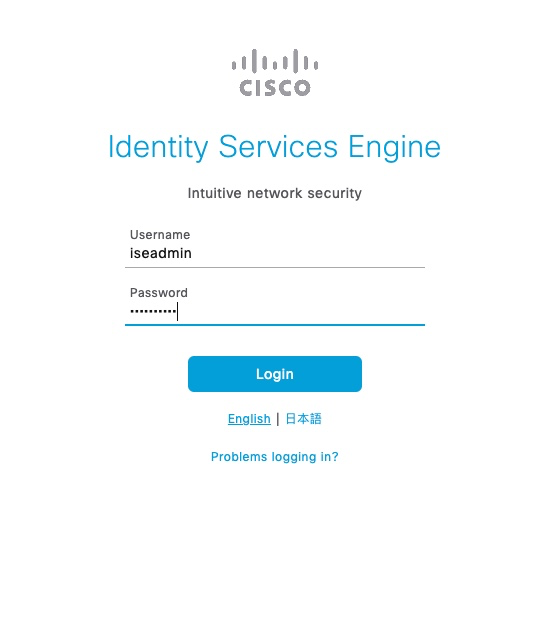
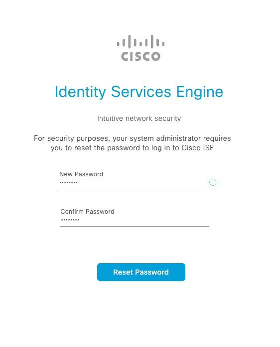
Next, a test user account is added
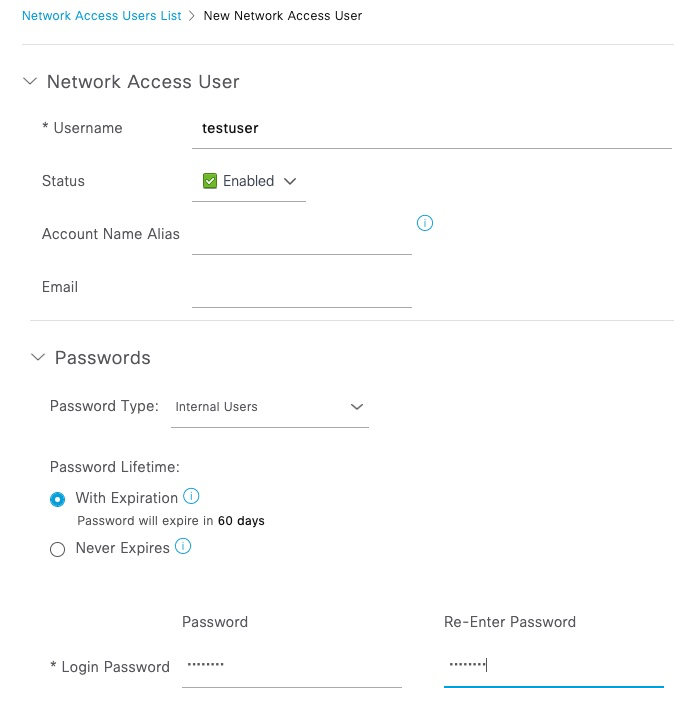
Linux bastion needs to be added as a Network Device
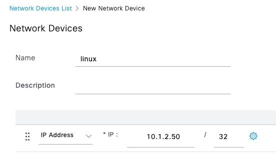
The test with radclient is successful
$ echo User-Name:=testuser,User-Password=Password123|radclient -x 10.2.0.1 auth cisco
Sent Access-Request Id 112 from 0.0.0.0:34999 to 10.2.0.1:1812 length 48
User-Name := "testuser"
User-Password = "Password123"
Cleartext-Password = "Password123"
Received Access-Accept Id 112 from 10.2.0.1:1812 to 0.0.0.0:0 length 109
User-Name = "testuser"
Class = 0x434143533a30613031303139364f796b4f6b4d7156344c31627044686f7842456f55675a79737176734f6964393358686a4833352f6a416b3a6973652d322f3436343633393534372f34353036radclient also supports other RADIUS attributes such as Calling-Station-ID
$ echo User-Name:=testuser,User-Password=Password123,Calling-Station-Id=11:22:33:44:55:66|radclient -x 10.2.0.1 auth cisco
Sent Access-Request Id 37 from 0.0.0.0:33947 to 10.2.0.1:1812 length 67
User-Name := "testuser"
User-Password = "Password123"
Calling-Station-Id = "11:22:33:44:55:66"
Cleartext-Password = "Password123"
Received Access-Accept Id 37 from 10.2.0.1:1812 to 0.0.0.0:0 length 109
User-Name = "testuser"
Class = 0x434143533a306130313031386465713656414930356a4f3859643772625a5a4b456a75474f6b5242346b724c67467339524a5275774659593a6973652d312f3436343633383336352f34363731Successful attempts are seen in ISE Live Log
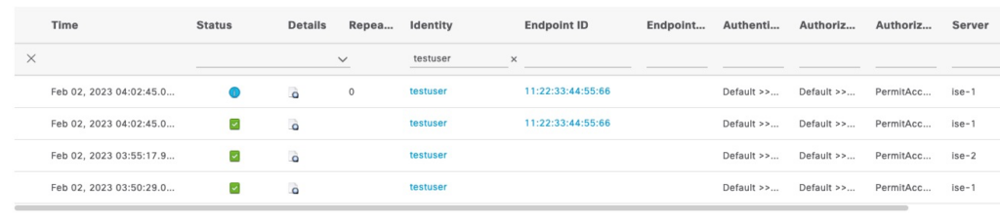
F5 correctly creates a persistence record based on the MAC address
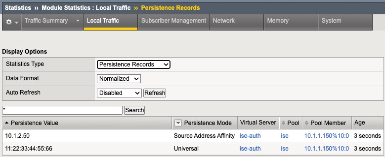